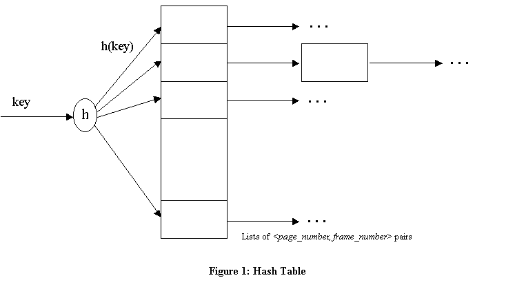

Download the zip file (cs560-proj2.tar.gz) for project 2 and unzip it (e.g., tar xvfz cs560-proj2.tar.gz) into your working directory (~/). Move to ~/proj2/BufMgr/src. If you make the project, it will create an executable named buftest. Right now, it does not work; you will need to fill in the bodies of the BufMgr class methods. The methods are defined (empty) in file buf.C. An expected output of a correct implementation is available in expected_output in ~/proj2/BufMgr/src. Note that there are also other directories distributed for Project 1. Instead of the buffer manager library (buf.a) provided in project 1, your buffer manager will be also tested on your HeapFile and HFPage implementations. If your HPage or HeapFile does not properly work, you need to fix it before proceeding with Project 2. Make sure that when your buffer manager is invoked, the same output should be displayed in both tests of HeapFile and HFPage of project 1.
DB library
The simplified buffer manager interface that you will implement allows a higher level program to allocate and deallocate pages on disk, to bring a disk page to the buffer pool and pin it, and to unpin a page in the buffer pool.
The methods that you have to implement are described below:class BufMgr { private: unsigned int numBuffers; // fill in this area public: Page* bufPool; // The actual buffer pool BufMgr (int numbuf, Replacer *replacer = 0); // Initializes a buffer manager managing "numbuf" buffers. // Disregard the "replacer" parameter for now. In the full // implementation of minibase, it is a pointer to an object // representing one of several buffer pool replacement schemes. ~BufMgr(); // Flush all valid dirty pages to disk Status pinPage(PageId PageId_in_a_DB, Page*& page, int emptyPage); // Check if this page is in buffer pool, otherwise // find a frame for this page, read in and pin it. // also write out the old page if it's dirty before reading // if emptyPage==TRUE, then actually no read is done to bring // the page Status unpinPage(PageId globalPageId_in_a_DB, int dirty, int hate); // hate should be TRUE if the page is hated and FALSE otherwise // if pincount>0, decrement it and if it becomes zero, // put it in a group of replacement candidates. // if pincount=0 before this call, return error. Status newPage(PageId& firstPageId, Page*& firstpage, int howmany=1); // call DB object to allocate a run of new pages and // find a frame in the buffer pool for the first page // and pin it. If buffer is full, ask DB to deallocate // all these pages and return error Status freePage(PageId globalPageId); // User should call this method if it needs to delete a page // this routine will call DB to deallocate the page Status flushPage(PageId pageid); // Used to flush a particular page of the buffer pool to disk // Should call the write_page method of the DB class Status flushAllPages(); // Flush all pages of the buffer pool to disk, as per flushPage. /*** Methods for compatibility with project 1 ***/ Status pinPage(PageId PageId_in_a_DB, Page*& page, int emptyPage, const char *filename); // Should be equivalent to the above pinPage() // Necessary for backward compatibility with project 1 Status unpinPage(PageId globalPageId_in_a_DB, int dirty, const char *filename); // Should be equivalent to the above unpinPage() // Necessary for backward compatibility with project 1 unsigned int getNumBuffers() const { return numBuffers; } // Get number of buffers unsigned int getNumUnpinnedBuffers(); // Get number of unpinned buffers
The buffer pool is a collection of frames (page-sized sequence of main memory bytes) that is managed by the Buffer Manager. It should be stored as an array bufPool[numbuf] of Page objects. In addition, you should maintain an array bufDescr[numbuf] of descriptors, one per frame. Each descriptor is a record with the following fields:
page number, pin_count, dirtybit
The pin_count field is an integer, page number is a PageId object, and dirtybit is a boolean. This describes the page that is stored in the corresponding frame. A page is identified by a page number that is generated by the DB class when the page is allocated, and is unique over all pages in the database. The PageId type is defined as an integer type in minirel.h.
A simple hash table should be used to figure out what frame a
given disk page occupies.The hash table should be implemented (entirely
in main memory) by using an array of pointers to lists of <page number,
frame number> pairs. The array is called the directory and each
list of pairs is called a
bucket. Given a page number, you
should apply a hash function to find the directory entry pointing
to the bucket that contains the frame number for this page, if the page
is in the buffer pool. If you search the bucket and don't find a pair containing
this page number, the page is not in the pool. If you find such a pair,
it will tell you the frame in which the page resides. This is illustrated
in Figure 1:
|

|
The hash function must distribute values in the domain of the search field uniformly over the collection of buckets. If we have HTSIZE buckets, numbered 0 through M-1, a hash function h of the form
works well in practice. HTSIZE should be chosen to be a prime number. When a page is requested the buffer manager should do the following: Check the buffer pool (by using the hash table) to see if it contains the requested page. If the page is not in the pool, it should be brought in as follows:
Theoretically, the best candidate page for
replacement is the page that will be last requested in the future. Since
implementing such policy requires a future predicting oracle, all buffer
replacement policies try to approximate it one way or another. The LRU
policy, for example, uses the past access pattern as an indication for
the future. However, sequential flooding can ruin this scheme and MRU becomes
more appropriate in this particular situation. In this assignment you are
supposed to implement the love/hate replacement policy. The policy
tries to enhance prediction of the future by relying on a hint from the
upper levels about the page. The upper level user hints the buffer manager
that the page is loved if it is more likely that the page will be
needed in the future, and hated if it is more likely that the page
will not be needed. The policy is supposed to maintain an MRU list for
the hated pages and an LRU list for the loved pages. If a page is needed
for replacement, the buffer manager selects from the list of hated pages
first and then from the loved pages if no hated ones exist.
A situation may arise when a page is both loved and hated at the same time. This can happen if the page was pinned by two different users and then was unpinned by the first one as a hated page and by the other as a loved page. In this case, assume that "love conquers hate", meaning that once a page is indicated as loved it should remain loved.
You are required to turn in your copy of all source files in the handin directory.
This includes all the files needed to make and run your executable — buftest — in ~/proj2/BufMgr.
We should be able to go to your handin directory, and type make and run the program (buftest) in ~/proj2/BufMgr/src.
Note that you should not need to change any files other than buf.C or buf.h.
In addition, for testing your buffer manager on project 1, you should also submit all the files needed to make and run your executables — hfpage and heaptest — in ~/proj2/HFPage/src/ and ~/proj2/HeapFile/src, respectively.
Once you have finished your project, please tar your directory (i.e., proj2.tar) and and email to Mina minakazemimanesh@email.arizona.edu the tar file. Please remember late submissions will not be accepted. Make sure to start early!